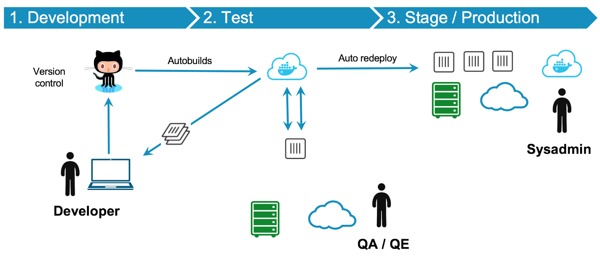

03 基于 Docker 的 DevOps 实践
敏捷开发已经流行了很长时间，如今有越来越多的传统企业开始践行敏捷开发所提倡的以人为中心、迭代、循序渐进的开发理念。
在这样的场景下引入 Docker 技术，首要目的就是使用 Docker 提供的虚拟化方式，给开发团队建立一套可以复用的开发环境，让开发环境可以通过 Image 的形式分享给项目的所有开发成员，以简化开发环境的搭建。但是，在没有 Docker 技术之前就已经有类如 Vagrant 的开发环境分发技术，软件开发者一样可以创建类似需求的环境配置流程。所以在本地开发环境方面，Docker 技术的优势并不能很好的发挥出来。笔者认为 Docker 的优点在于通过简化CI（持续集成）、CD（持续交付）的构建流程，让开发者把更多的精力用在开发上。
每家公司都有自己的开发技术栈，我们需要结合实际情况对其进行持续改进，优化自己的构建流程。当我们准备迈出第一步时，我们首先要确立一张构建蓝图，做到胸有成竹，这样接下来的事情才会很快实现。
这张时序图概括了目前敏捷开发流程的所有环节。结合以上时序图给出的蓝图框架，本文的重点是讲解引入 Docker 技术到每个环节中的实践经验。
组建持续发布的敏捷团队
开发团队在引入 Docker 技术的时候，最大的问题是没有可遵循的业界标准。大家常常以最佳实践为口号，引入多种工具链，导致在使用 Docker 的过程中没有侧重点。涉及到 Docker 选型，又在工具学习上花费大量时间，而不是选用合适的工具以组建可持续发布产品的开发团队。基于这样的场景，我们可以把“简单易用”的原则作为评判标准，引入到 Docker 技术工具选型的参考中。开发团队在引入 Docker 技术的过程中，首先需要解决的是让团队成员尽快掌握 Docker 命令行的使用。在熟悉了 Docker 命令行之后，团队需要解决几个关键问题具体如下：
- Base Image 的选择，比如phusion-baseimage。
- 管理Docker应用配置工具的选择，比如Ansible、Tereform。
- Host主机系统的选择，比如CoreOS、Atomic、Ubuntu。
Base Image
包括了操作系统命令行和类库的最小集合，一旦启用，所有应用都需要以它为基础创建应用镜像。Ubuntu 作为官方使用的默认版本，是目前最易用的版本，但系统没有经过优化，可以考虑使用第三方有划过的版本，比如 phusion-baseimage。
对于选择 RHEL、CentOS 分支的 Base Image，提供安全框架 SELinux 的使用、块级存储文件系统 devicemapper 等技术，这些特性是不能和 Ubuntu 分支通用的。另外需要注意的是，使用的操作系统分支不同，其裁剪系统的方法也完全不同，所以大家在选择操作系统时一定要慎重。
管理 Docker 应用配置工具的选择
主要用于基于 Dockerfile 创建 Image 的配置管理。我们需要结合开发团队的现状，选择一款团队熟悉的工具作为通用工具。配置工具有很多种选择，其中 Ansible 作为后起之秀，在配置管理的使用中体验非常简单易用，推荐大家参考使用。
Host 主机系统
是 Docker 后台进程的运行环境。从开发角度来看，它就是一台普通的单机 OS 系统，我们仅部署Docker 后台进程以及集群工具，所以希望 Host 主机系统的开销越小越好。这里推荐给大家的 Host 主机系统是 CoreOS，它是目前开销最小的主机系统。另外，还有红帽的开源 Atomic 主机系统，有基于Fedora、CentOS、RHEL多个版本的分支选择，也是不错的候选对象。
另外一种情况是选择最小安装操作系统，自己定制Host 主机系统。如果你的团队有这个实力，可以考虑自己定制这样的系统。
持续集成的构建系统
当开发团队把代码提交到 Git 应用仓库的那一刻，我相信所有的开发者都希望有一个系统能帮助他们把这个应用程序部署到应用服务器上，以节省不必要的人工成本。但是，复杂的应用部署场景，让这个想法实现起来并不简单。
首先，我们需要有一个支持 Docker 的构建系统，这里推荐 Jenkins。它的主要特点是项目开源、方便定制、使用简单。Jenkins 可以方便的安装各种第三方插件，从而方便快捷的集成第三方的应用。
通过 Jenkins 系统的 Job 触发机制，我们可以方便的创建各种类型的集成 Job 用例，但缺乏统一标准的 Job 用例使用方法，会导致项目 Job 用例使用的混乱，难于管理维护，这也让开发团队无法充分利用好集成系统的优势，当然这也不是我们期望的结果。所以，敏捷实践方法提出了一个可以持续交付的概念 DeploymentPipeline（管道部署）。通过Docker 技术，我们可以很方便的理解并实施这个方法。
Jenkins 的管道部署把部署的流程形象化成为一个长长的管道，每间隔一小段会有一个节点，也就是 Job，完成这个 Job 工作后才可以进入下一个环节。形式如下：
大家看到上图中的每一块面板在引入 Docker 技术之后，就可以使用 Docker 把任务模块化，然后做成有针对性的 Image 用来跑需要的任务。每一个任务 Image 的创建工作又可以在开发者自己的环境中完成，类似的场景可以参考下图：

所以，使用 Docker 之后，任务的模块化很自然地被定义出来。通过管道图，可以查看每一步的执行时间。开发者也可以针对任务的需要，为每一个任务定义严格的性能标准，已作为之后测试工作的参考基础。
最佳的发布环境
应用经过测试，接下来我们需要把它发布到测试环境和生产环境。这个阶段中如何更合理地使用Docker 也是一个难点，开发团队需要考虑如何打造一个可伸缩扩展的分发环境。其实，这个环境就是基于 Docker 的私有云，更进一步我们可能期望的是提供 API 接口的 PaaS 云服务。为了构建此 PaaS 服务，这里推荐几款非常热门的工具方便大家参考，通过这些工具可以定制出企业私有的 PaaS 服务。
Google的一个容器集群管理工具，它提出两个概念：
- Cluster control plane（AKA master），集群控制面板，内部包括多个组件来支持容器集群需要的功能扩展。
- The Kubernetes Node，计算节点，通过自维护的策略来保证主机上服务的可用性，当集群控制面板发布指令后，也是异步通过 etcd 来存储和发布指令，没有集群控制链路层面的依赖。
通过官方架构设计文档的介绍，可以详细的了解每个组件的设计思想。这是目前业界唯一在生产环境部署经验的基础上推出的开源容器方案，目前是 CNCF 推荐的容器管理系统的行业参考标准。
- Docker swarmkit
SwarmKit 是一个分布式集群调度平台，作为docker 一个新的集群调度开源项目，它大量借鉴了 Kubernetes 和 Apache Mesos 的优秀概念和最佳实践，通过内嵌到 docker daemon 中实现对开发用户的引入。实际上它可以被看做 Docker Swarm 的2.0版本。目前业界云原生应用基金会并没有收录此集群方案，所以开发者在选型时会慎重考虑。
- Apache Mesos + Marathon(DCOS)
Apache Mesos 系统是一套资源管理调度集群系统，生产环境使用它可以实现应用集群。此系统是由 Twitter 发起的 Apache 开源项目。在这个集群系统里，我们可以使用 Zookeeper 开启3个Mesos master 服务，当3个 Mesos master 通过 zookeeper 交换信息后会选出 Leader 服务，这时发给其它两台 Slave Messos Master 上的请求会转发到 Messos master Leader 服务。Mesos slave 服务器在开启后会把内存、存储空间和 CPU 资源信息发给 Messos master。
Mesos 是一个框架，在设计它的时候只是为了用它执行 Job 来做数据分析。它并不能运行一个比如 Web 服务 Nginx 这样长时间运行的服务，所以我们需要借助 marathon 来支持这个需求。
marathon 有自己的 REST API，我们可以创建如下的配置文件 Docker.json：
{
"container": {
"type": "DOCKER",
"docker": {
"image": "libmesos/ubuntu"
}
},
"id": "ubuntu",
"instances": "1",
"cpus": "0.5",
"mem": "512",
"uris": [],
"cmd": "while sleep 10; do date -u +%T; done"
}
然后调用
curl -X POST -H "Content-Type: application/json" http://:8080/v2/apps [email protected]
我们就可以创建出一个 Web 服务在 Mesos 集群上。对于 Marathon 的具体案例，可以参考官方案例。
结论
Docker 的 DevOps 实践方案，是一套灵活简单的敏捷解决方案。它克服了之前集群工具复杂、难用的困境，使用统一的 Docker 应用容器概念部署软件应用。通过引入 Docker 技术，开发团队在面对复杂的生产环境中，可以结合自己团队的实际情况，定制出适合自己基础架构的开发测试运维一体化解决方案。